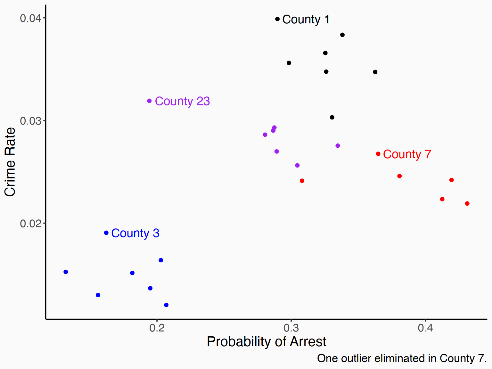
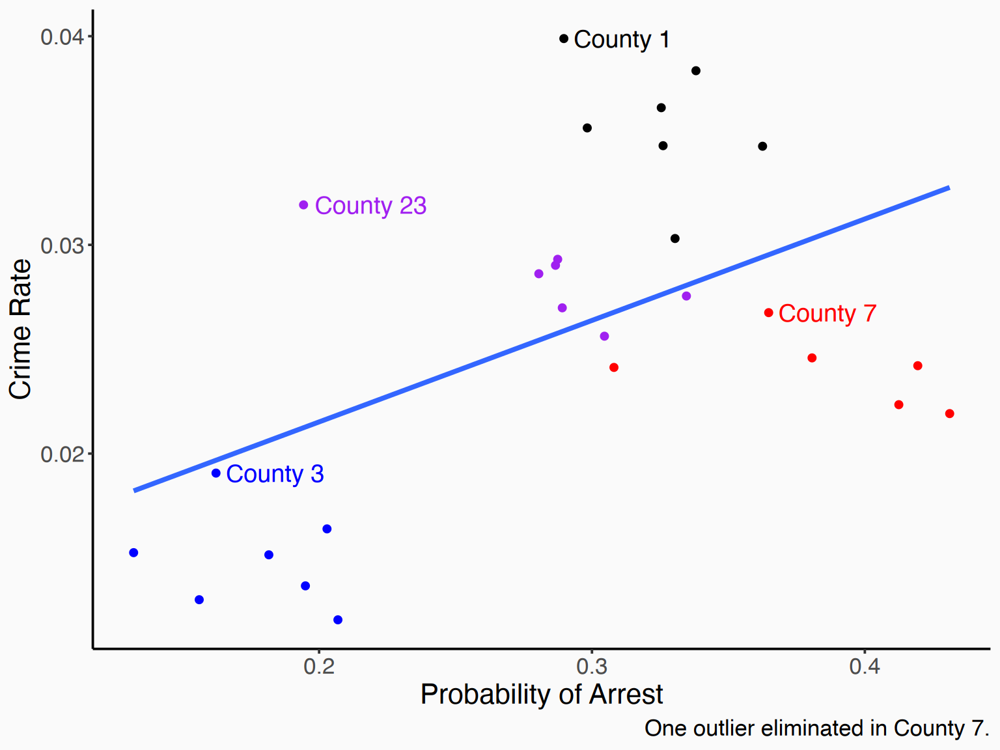
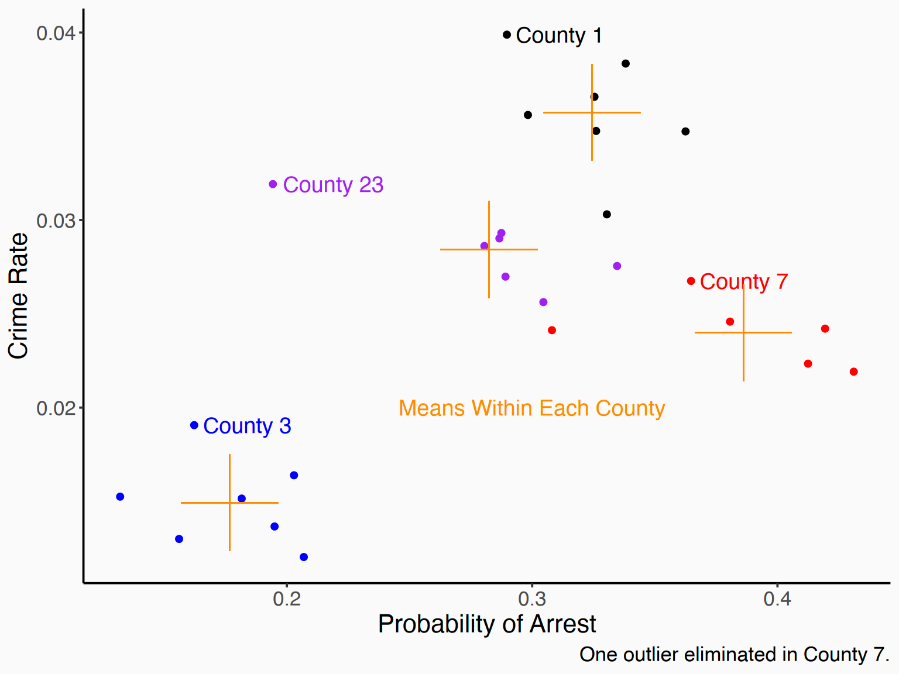
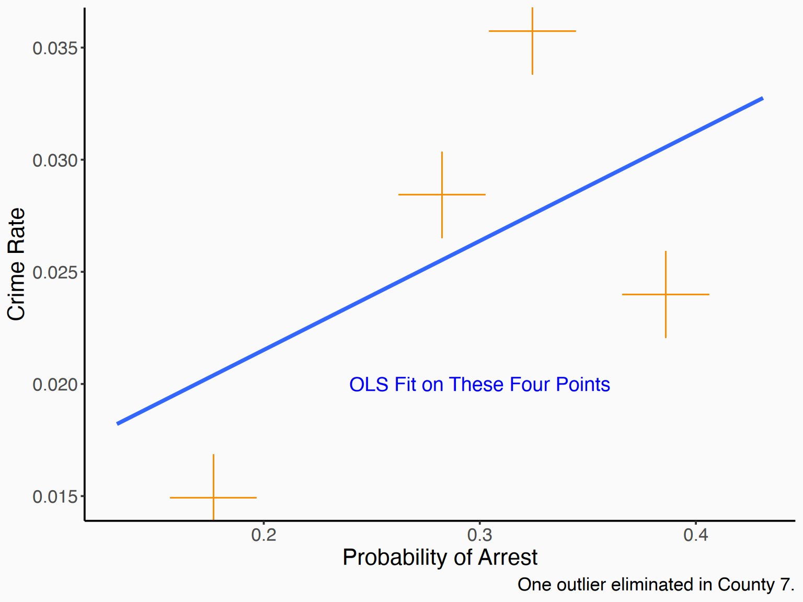
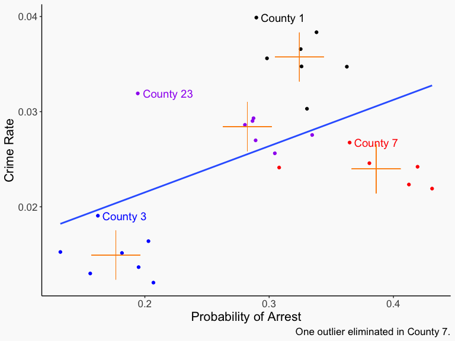
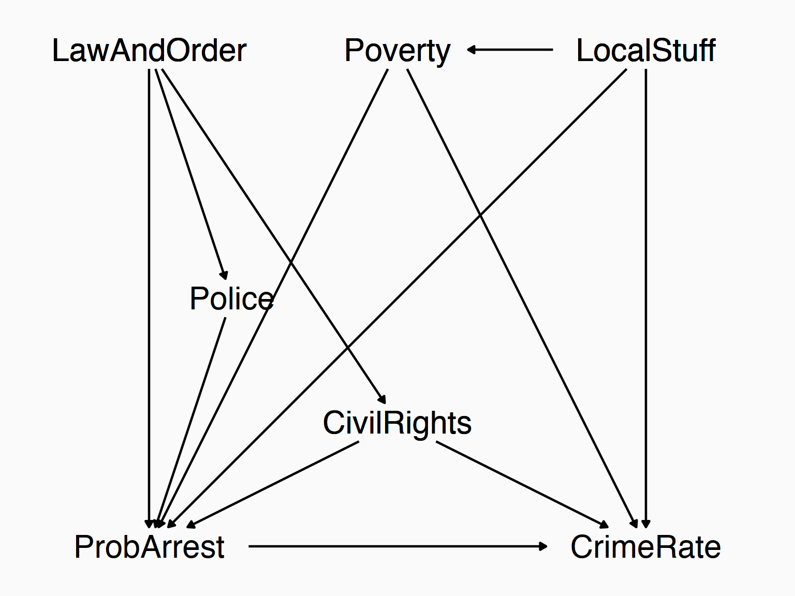
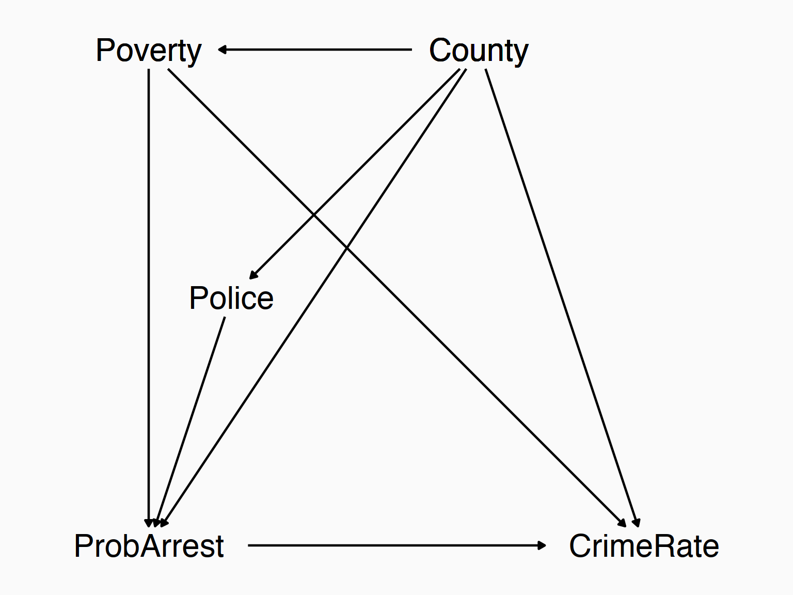

| County | Year | CrimeRate | ProbofArrest |
|---|---|---|---|
| 1 | 81 | 0.0398849 | 0.289696 |
| 1 | 82 | 0.0383449 | 0.338111 |
| 1 | 83 | 0.0303048 | 0.330449 |
| 1 | 84 | 0.0347259 | 0.362525 |
| 1 | 85 | 0.0365730 | 0.325395 |
| 1 | 86 | 0.0347524 | 0.326062 |
| 1 | 87 | 0.0356036 | 0.298270 |
| 3 | 81 | 0.0163921 | 0.202899 |
| 3 | 82 | 0.0190651 | 0.162218 |
| 9 rows out of 630. "Prob. of Arrest" is estimated probability of being arrested when you commit a crime |
🗓️ Week 8
Within variation
PB4A7- Quantitative Applications for Behavioural Science
Check-in
- So far we’ve been learning about how to set up, run, and interpret an ordinary least squares regression
- This is a key skill for anyone doing anything with data - even if you never run a regular ol’ linear regression again, pretty much everything else in applied stats builds off of it in some way
- Another thing we’ve been doing is thinking about how to design and add controls to that regression to identify our effect of interest by closing back doors
The Measurement Problem…
- And this has led us to some issues that have already popped up!
- For this approach to work, we need to not only figure out what we need to control for, using our diagram, but we need to actually control for it
- A lot of the time we don’t have that data!
- And thus all the skeptical comments we had about the designs we came up with
A Pickle
- So obviously this is a problem, and it’s not one we can reason or trick our way out of
- If we don’t have the variable we need to control for, we don’t have it
- … or do we?
The Rest of the Term
- Much of the rest of the term is going to be focused on finding ways to control for stuff that we can’t measure
- Seems impossible! But it is possible, at least in some circumstances
- Today, we will be talking about within variation and between variation, and the ability to control for all between variation using fixed effects
Panel Data
- We are working now in the domain of panel data
- Panel data is when you observe the same individual over multiple time periods
- “Individual” could be a person, or a company, or a state, or a country, etc. There are \(N\) individuals in the panel data
- “Time period” could be a year, a month, a day, etc.. There are \(T\) time periods in the data
- For now we’ll assume we observe each individual the same number of times, i.e. a balanced panel (so we have \(N\times T\) observations)
- You can use this stuff with unbalanced panels too, it just gets a little more complex
Panel Data
- Here’s what (a few rows from) a panel data set looks like - a variable for individual (county), a variable for time (year), and then the data
Between and Within
- Let’s pick a few counties and graph this out

Between and Within
- If we look at the overall variation, just pretending this is all together, we get this

Between and Within
- BETWEEN variation is what we get if we look at the relationship between the means of each county

Between and Within
- And I mean it! Only look at those means! The individual year-to-year variation within county doesn’t matter.

Between and Within
- Within variation goes the other way - it treats those orange crosses as their own individualized sets of axes and looks at variation within county from year-to-year only!
- We basically slide the crosses over on top of each other and then analyze that data

Between and Within
- We can clearly see that between counties there’s a strong positive relationship
- But if you look within a given county, the relationship isn’t that strong, and actually seems to be negative
- Which would make sense - if you think your chances of getting arrested are high, that should be a deterrent to crime
- But what are we actually doing here? Let’s think about the causal diagram / data-generating process!
- What goes into the probability of arrest and the crime rate? Lots of stuff!
The Crime Rate
- “LocalStuff” is just all the things unique to that area
- “LawAndOrder” is how committed local politicians are to “Law and Order Politics”

Between and Within
- For each of these variables we can ask if they vary between groups and/or within groups
- LocalStuff is all the stuff unique to that county - geography, landmarks, the quality of the schools, almost by definition this only varies between groups. It’s not like the things that make your county unique are different each year (or at least not very different)
- Whether the county has LawAndOrder and how many CivilRights you’re allowed might change a bit year to year, but in general, political climates like that change pretty slowly. At a bit of a stretch we can call that something that only varies between groups too
- Police budgets (and thus number of police on the streets) and Poverty (which varies with the economy) vary both between counties, but also within counties from year to year
- Variables with between variation only (by our assumption): LocalStuff, LawAndOrder, CivilRights
- Variables with both between and within variation: Police, Poverty
Between and Within
- Let’s simplify our graph!
- Some of the variables only vary between counties
- So, we can replace those variables on the graph with the variable County
- Right? That’s where all the variation is anyway
The Crime Rate
- “LocalStuff” is just all the things unique to that area
- “LawAndOrder” is how committed local politicians are to “Law and Order Politics”

Between and Within
- Now the task of identifying ProbArrest \(\rightarrow\) CrimeRate becomes much simpler!
- If we control for County, that will close a lot of back doors for us
- (based on the diagram, all we need to control for is County and Poverty!)
- Conveniently, we can control for County just like it was any other variable!
- And when we do, we automatically control for all variables that only have between variation, whatever they are, even if we can’t measure them directly or didn’t think about them
- All that’s left is the within variation
Concept Checks
- For each of these variables, would we expect them to have within variation, between variation, or both?
- (Individual = person) How a child’s height changes as they age.
- (Individual = person) In a data set tracking many people over many years, the variation in the number of children a person has in a given year.
- (Individual = city) Overall, Paris, France has more restaurants than Paris, Texas.
- (Individual = genre) The average pop music album sells more copies than the average jazz album
- (Individual = genre) Miles Davis’ Kind of Blue sold very well for a jazz album.
- (Individual = genre) Michael Jackson’s Thriller, a pop album, sold many more copies than Kind of Blue, a jazz album.
Removing Between Variation
- Okay so that’s the concept
- Remove all the between variation so that all that’s left is within variation
- And in the process control for any variables that are made up only of between variation
- How can we actually do this? And what’s really going on?
- Let’s first talk about the regression model itself that this implies
- Then let’s actually do the thing. There are two main ways: de-meaning and binary variables (they give the same result, for balanced panels anyway)
Estimation vs. Design
- To be clear, this is exactly 0% different from what we’ve done before in terms of controlling for stuff
- And in fact we’re about to do the exact same thing we did before by just adding a categorical control variable for
countyor whatever - (and in fact the “within” thing holds with other categorical controls - a categorical control for education isolates variation “within education levels”)
- The difference is the reason we’re doing it. It’s fixed effects because a categorical control for individual controls for a lot of stuff, and we think closes a lot of back doors for us, not just one, and not just ones we can measure
The Model
The \(it\) subscript says this variable varies over individual \(i\) and time \(t\)
\[Y_{it} = \beta_0 + \beta_1 X_{it} + \varepsilon_{it}\]
- \(X_{it}\) is related to LocalStuff which is not in the model and thus in the error term!
- Regular ol’ omitted variable bias. If we don’t adjust for the individual effect, we get a biased \(\hat{\beta}_1\)
- (this bias is called “pooling bias” although it’s really just a form of omitted variable bias)
- We really have this then: \[Y_{it} = \beta_0 + \beta_1 X_{it} + (\alpha_i + \varepsilon_{it})\]
De-meaning
- Let’s do de-meaning first, since it’s most closely and obviously related to the “removing between variation” explanation we’ve been going for
- The process here is simple!
- For each variable \(X_{it}\), \(Y_{it}\), etc., get the mean value of that variable for each individual \(\bar{X}_i, \bar{Y}_i\)
- Subtract out that mean to get residuals \((X_{it} - \bar{X}_i), (Y_{it} - \bar{Y}_i)\)
- Work with those residuals
- That’s it!
How does this work?
- That \(\alpha_i\) term gets absorbed
- The residuals are, by construction, no longer related to the \(\alpha_i\), so it no longer goes in the residuals!
\[(Y_{it} - \bar{Y}_i) = \beta_0 + \beta_1(X_{it} - \bar{X}_i) + \varepsilon_{it}\]
Let’s do it!
- We can use
group_byto get means-within-groups and subtract them out
data(crime4, package = 'wooldridge')
crime4 <- crime4 %>%
## Filter to the data points from our graph
filter(county %in% c(1,3,7, 23),
prbarr < .5) %>%
group_by(county) %>%
mutate(mean_crime = mean(crmrte),
mean_prob = mean(prbarr)) %>%
mutate(demeaned_crime = crmrte - mean_crime,
demeaned_prob = prbarr - mean_prob)And Regress!
orig_data <- feols(crmrte ~ prbarr, data = crime4)
de_mean <- feols(demeaned_crime ~ demeaned_prob, data = crime4)
etable(orig_data, de_mean) orig_data de_mean
Dependent Var.: crmrte demeaned_crime
Constant 0.0118* (0.0050) 1.41e-18 (0.0004)
prbarr 0.0486** (0.0167)
demeaned_prob -0.0305* (0.0117)
_______________ _________________ _________________
S.E. type IID IID
Observations 27 27
R2 0.25308 0.21445
Adj. R2 0.22321 0.18303
---
Signif. codes: 0 '***' 0.001 '**' 0.01 '*' 0.05 '.' 0.1 ' ' 1Interpreting a Within Relationship
- How can we interpret that slope of
-0.03? - This is all within variation so our interpretation must be within-county
- So, “comparing a county in year A where its arrest probability is 1 (100 percentage points) higher than it is in year B, we expect the number of crimes per person to drop by .03”
- Or if we think we’ve causally identified it (and want to work on a more realistic scale), “raising the arrest probability by 1 percentage point in a county reduces the number of crimes per person in that county by .0003”.
- We’re basically “controlling for county” (and will do that explicitly in a moment)
- So your interpretation should think of it in that way - holding county constant i.e. comparing two observations with the same value of county i.e. comparing a county to itself at a different point in time
Concept Checks
- Why does subtracting the within-individual mean of each variable “control for individual”?
- In a sentence, interpret the slope coefficient in the estimated model \((Y_{it} - \bar{Y}_i) = 2 + 3(X_{it} - \bar{X}_i)\) where \(Y\) is “blood pressure”, \(X\) is “stress at work”, and \(i\) is an individual person
The Least Squares Dummy Variable Approach
- De-meaning the data isn’t the only way to do it!
- You can also use the least squares dummy variable (another word for “binary variable”) method
- We just treat “individual” like the categorical variable it is and add it as a control! Again, the regression approach is exactly the same as with any categorical control, but the research design reason for doing it is different
Let’s do it!
lsdv <- feols(crmrte ~ prbarr + factor(county), data = crime4)
etable(orig_data, de_mean, lsdv, keep = c('prbarr', 'demeaned_prob')) orig_data de_mean lsdv
Dependent Var.: crmrte demeaned_crime crmrte
prbarr 0.0486** (0.0167) -0.0305* (0.0124)
demeaned_prob -0.0305* (0.0117)
_______________ _________________ _________________ _________________
S.E. type IID IID IID
Observations 27 27 27
R2 0.25308 0.21445 0.94114
Adj. R2 0.22321 0.18303 0.93044
---
Signif. codes: 0 '***' 0.001 '**' 0.01 '*' 0.05 '.' 0.1 ' ' 1The same!
- The result is the same, as it should be
- Except for that \(R^2\) - What is that “within R2”?
- Because de-meaning takes out the part explained by the fixed effects ( \(\alpha_i\) ) before running the regression, while LSDV does it in the regression
- So the .94 is the portion of
crmrteexplained byprbarrandcounty, whereas the .21 is the “within - \(R^2\)” - the portion of the within variation that’s explained byprbarr - Neither is wrong (and the .94 isn’t “better”), they’re just measuring different things
Why LSDV?
- A benefit of the LSDV approach is that it calculates the fixed effects \(\alpha_i\) for you
- We left those out of the table with the
coefsargument ofexport_summs(we rarely want them) but here they are:
OLS estimation, Dep. Var.: crmrte
Observations: 27
Standard-errors: IID
Estimate Std. Error t value Pr(>|t|)
(Intercept) 0.045631 0.004116 11.08640 1.7906e-10 ***
prbarr -0.030491 0.012442 -2.45068 2.2674e-02 *
factor(county)3 -0.025308 0.002165 -11.68996 6.5614e-11 ***
factor(county)7 -0.009870 0.001418 -6.96313 5.4542e-07 ***
factor(county)23 -0.008587 0.001258 -6.82651 7.3887e-07 ***
---
Signif. codes: 0 '***' 0.001 '**' 0.01 '*' 0.05 '.' 0.1 ' ' 1
RMSE: 0.001933 Adj. R2: 0.930441- Interpretation is exactly the same as with a categorical variable - we have an omitted county, and these show the difference relative to that omitted county
Why LSDV?
- This also makes clear another element of what’s happening! Just like with a categorical var, the line is moving up and down to meet the counties
- Graphically, de-meaning moves all the points together in the middle to draw a line, while LSDV moves the line up and down to meet the points

Why Not LSDV?
- LSDV is computationally expensive
- If there are a lot of individuals, or big data, or if you have many sets of fixed effects (yes you can do more than just individual - we’ll get to that next time!), it can be very slow
- Most professionally made fixed-effects commands use de-meaning, but then adjust the standard errors properly
- (They also leave the fixed effects coefficients off the regression table by default)
Limits to Fixed Effects
- Okay! At this point we have the concept behind fixed effects, can execute them, and know what they’re good for
- What aren’t they good for?
- They don’t control for anything that has within variation
- They control away everything that’s between-only, so we can’t see the effect of anything that’s between-only (“effect of geography on crime rate?” Nope!)
- Anything with only a little within variation will have most of its variation washed out too (“effect of population density on crime rate?” probably not)
- The estimate pays the most attention to individuals with lots of variation in treatment
- 2 and 3 can be addressed by using “random effects” instead but we aren’t covering that in this class (see the The Effect chapter on Fixed Effects for more)
Concept Checks
- Why can’t we use individual-person fixed effects to study the impact of race on traffic stops?
- The within \(R^2\) from is .3, and the overall \(R^2\) is .5. Interpret these two numbers in sentences
- In a sentence, interpret the slope coefficient in the estimated model \((Y_{it} - \bar{Y}_i) = 1 + .5(X_{it} - \bar{X}_i)\) where \(Y\) is “school funding per child” and \(X\) is “population growth”, and \(i\) is city